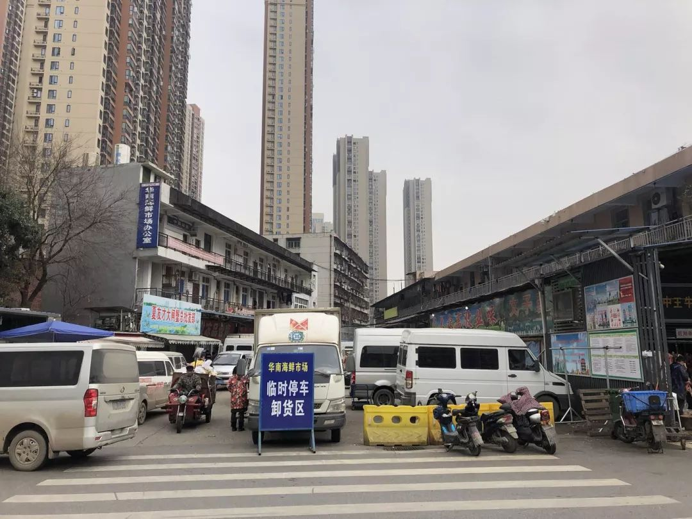

在人间 | 封城前从武汉返回深圳，我主动向社区做了隔离报备
原文链接 备份链接 这是一个不同寻常的年，心有余悸，跌宕起伏。回武汉这几天的经历，像一部历险记，在我脑海里刻下了深深的烙印。 淡定的武汉 我是1月20号从深圳回老家武汉的。我曾从事过新闻工作，也有不少武汉医疗圈的朋友，因此对武汉肺炎的事一 …

自新型冠状病毒爆发以来，很多从武汉返乡的工作者、大学生接到了当地社区的电话，或者填写了关于个人信息的调查表。疫情当前，这一切都是为了“配合疫情防控、对抗病毒传播”。可是事情的发展渐渐走了样。大年初二一早，#武汉返乡人员信息被泄露#话题开始在社交网络上传开。武汉归乡人员的身份证号码、家庭住址、电话号码等个人隐私，被堂而皇之地公布、流传于朋友圈、微信群……这难道是我们“排查疫情、消除隐患”的有效解决办法吗？
自昨天发出征文启事后，单读收到了各地朋友的来信。今日来信的作者家住湛江，他的文章恰好关照到这一令人不安的趋势，也呈现了面对重大疫情时村镇与城市之间割裂的状态。
封城后，武汉面临各种物资短缺的困难，很多人已经在这场“战斗”中筋疲力尽，他们更需要广泛的支持和帮助。我们呼吁大家：不要在网上传播武汉返乡者的个人信息，不要让这些所谓的“逃离武汉者”背上无谓的骂名；而从武汉返乡的人，也请为了自己、家人和社区的健康，主动自我检查与隔离。
在这次新型肺炎疫情中，你看到了什么？你经历了什么？不论你身在湖北还是其他地方，在城市还是乡村，在什么工作岗位上，都欢迎你和我们分享你看见的人和事。我们需要很多双的眼睛，才能把时代中的危机看得更加真切。
请将你在疫情期间的所见所闻，投稿至单读编辑部，我们将实时在单读新媒体上选择发布，让更多人看见。
投稿邮箱：anonymous@owspace.com

武汉人不是病毒 | 返乡手记
撰文：宗城
“你听说了吗？武汉出事了。”
“出了什么事？”
“我在媒体群看到的，说是武汉当地有个市场，卖野味，导致吃的人感染了不明肺炎。”
“严重吗？”
“还不确定，说是只有几十个人感染，已经被隔离了。当地卫生局说，还没有人传人的迹象。”
“哦……那就好，希望不会太严重吧。”
这是 12 月底，我通过微信群知道的消息。那时候，武汉不明肺炎的新闻还没太多人关注，湖北省外的大部分人都把它当作一个很遥远的事，手指滑一滑，也就略过了相关新闻。

▲2019 年 12 月 31 日下午的华南海鲜市场
我是自由职业者，不用坐班，可以比上班族更早返乡。为了节省一月份的房租，在年底放松下自己，我在 1 月初去了上海和深圳。无论是上海虹桥还是深圳北站，火车站里，有人在人群中咳嗽，密密麻麻的人流，并没有多少人戴口罩。他们只当这是普通的一天。
往后两天，肺炎导致的患病人数没有上升，关于此事的地方报道也是一种云淡风轻的调子。仿佛它只是流感季节里微不足道的事件，并不值得大惊小怪。
直到 2019 年 12 月 31 日，华南海鲜市场，当地执法人员说有疫情，媒体才再度把焦点对准这个地方。那时候，新型冠状病毒（2019-nCoV）在报道中仍被形容为“不明肺炎”。《丁香医生》的撰稿人做出了报道，随后，三联生活周刊、财新、新京报等媒体跟进。
年底，武汉大型集会依旧，20 万人来到了江滩公园，伴随着长江灯光秀倒数跨年。在 2019 年的最后 10 秒钟，他们聚集在广场，在两江四岸的高楼大厦，同步亮起新年 10 秒倒计时，数到最后一秒时，从天俯瞰如蝼蚁般的人们，热情许下新年愿望。
据《丁香医生》的报道：第二天早晨，华南海鲜市场来了一批不速之客。一辆辆公安、城管执法、市场监管的公务用车，运来大批执法人员。商户们被命令拉下闸门速离，市场只能出、不能进。商户被勒令离开后，冷清的街道里，只有穿着白色防化服的检疫人员的背影。
在他们身后，一个摊位的菜单明码标价，售卖野味，种类多达42种，包括竹鼠、狗狸獾、猪狸獾、果子狸、狐狸、树熊、孔雀、大雁等，“均可活杀现宰，速冻冰鲜，送货上门”。
2020 年 1 月 1 日，我在媒体上看到华南海鲜市场暂时关闭的消息，此时，武汉地方政府上报的数据，仍显示感染人数不足一百人。只有千里之外的香港，传出上百人疑似感染（并非确诊）的新闻。这时候，中国其他省份，除湖北省以外的通报数字是：零。
新闻每天都有大大小小的死伤事件，我也就没太把这件事放在心里，但是回到家后，情况有变。令人不安的消息在增多。先是武汉市外传出感染病例，随后有记者批评存在治理不当的问题……
从 12 月底直到 1 月 20 号，过去二十天，国家卫健委高级别专家组组长钟南山院士才证实了武汉肺炎的“人传人”现象，存在医护感染，并提及了“超级传播者”。
不久，武汉封市，舆情哗然。不明肺炎被定性为新型冠状病毒，预估感染者达到一千以上，有传言说，实际感染人数超过纸面数字。武汉医院告急，床位供不应求，医院的走廊上，老人孩子靠墙而睡，筋疲力尽的医生，在病人的围堵中艰难开路……

▲2020 年 1 月 21 日，武汉站出行的旅客均佩戴口罩。
那正是春节联欢晚会的时候。一位演员歌唱道：“问我国家哪像染病？”
人心惊惶，大小流言不止。武汉封市前逃出的武汉人正在被追查，其他省份的人们都不欢迎他们，网上流传了一些视频，有人看到鄂字车牌的车辆，勒令他们下车，等待警察把他们带走。这还是理智的。不理智的是，有人公开人肉武汉人的信息，甚至包括他们的住所、身份证号、亲戚构成等。简直像是一场针对武汉人的“猎巫行动”。
也是在那天，一则新闻说：广州一城管局副局长被确诊为新型肺炎，曾视察花市，接触上千人。这个消息顿时让群里炸开了锅，一个看似很遥远的事，突然离我们很近。
第二天，市政府通报：
市政府 8 点半开疫情紧急会议，10 点半区里开工部署会，11 点市委市政府再开特急会议。刚才会议传达证实：大批武汉人员、车辆去海南，海南封岛、规劝这些人不给上岛，这些人员车辆滞留在湛江市区、徐闻、雷州等地，湛江防控疫情形势严峻，风险隐患更大，尽量别外出、不去人员聚集的公共场所。
民间也开始自发举报，群里都在传一则通知：
请快速扩散：3637900（办公室），3637923（流行病科）是湛江疾病预防控制中心的电话，如果在湛江发现湖北武汉（鄂 A）的车辆，记下车牌并马上打这个电话，疾控中心会安排人跟进，守护湛江，人人有责！
高中同学群里，有人说：这几天别出去，金沙湾不少武汉人。附属医院发热门诊，一夜之间排满了人。有病的没病的都害怕自己有病。
城里人之所以如此恐慌，一方面是因为疫情，另一方面也是由于谣言。但这是城市里的状况，到了村镇，我年三十返回时，却是另一种图景。
我费了很大力气，才让父母戴上口罩，可没过多久，母亲出门又忘了。我随父母回农村，人们按着过去的节奏生活，鞭炮齐鸣，烟花绚烂，没什么人戴口罩。就好像，武汉肺炎的事发生在另一个时空，我所看到的新闻报道，都和众人无关。
我是宗族里的小辈，没什么话语权，说了，亲戚们也不会在意，他们说，有那么严重吗？没事的。对，没事，这是他们说起最多的词。若有人说，要因为一场来自武汉的遥远的病毒性肺炎，取消走亲戚、家庭聚餐，他们会感到不可思议。偶有一些看新闻的长辈，意识到肺炎已扩散至全国，但是，在过年习惯和规避风险之间，他们仍选择习惯——一套他们年复一年的过春节的模式，这个模式，包括贴对联、年夜饭、放鞭炮、亲戚串门、互相发红包，以及，一些每年都会重复的说辞。不知有汉，无论魏晋。
这时候，我戴着口罩，像是一个异类，一个胆小的孩子。大人们会说，多大点事，当年非典都过去了，这有什么。慢慢地，在这个氛围里，戴口罩的人也不好意思，默默摘下了口罩……
我的老家并不是疫情的重灾区，所以，亲戚们的侥幸，这一次或许不会有什么后果。可是，我脑海中设想的是，如果有一天，病毒性肺炎始发地不在武汉，而是像我的老家这样，一个广东省内普普通通的小城市、小村镇呢？
广东境内不乏贩卖野味者，非典的始发地就在广东。可是，十七年过去了，我没有信心，自己的家乡如果遭遇这种灾祸，能够第一时间把它掐灭在源头。
本市没有几家医疗条件发达的大型医院，更没有钟南山这样的业内顶尖专家。本市的报纸不做深度调查，没有特稿记者，有的是企业软文、转载新闻和不痛不痒的豆腐块散文。本市的基层预警系统几乎是摆设，在村镇里，不会有人特地提醒老百姓这个事情的严重程度，非常时期要尽量减少大型集会、走亲戚串门……
我没有在亲戚聚会时提出激烈的反对，而是服从了这种侥幸心理。记得以前读过一本小说，叫《北京折叠》，返乡感触尤深的是，中国是一个巨型的折叠，其折叠程度，超过北京内部，辐射城乡和县镇，它表面上难以捉摸，在自己回到村镇时，又是触手可及。
那天夜晚，我想起鲁迅的《呐喊》自序，“然而我虽然自有无端的悲哀，却也并不愤懑，因为这经验使我反省，看见自己了：就是我决不是一个振臂一呼应者云集的英雄。只是我自己的寂寞是不可不驱除的，因为这于我太痛苦。我于是用了种种法，来麻醉自己的灵魂，使我沉入于国民中，使我回到古代去，后来也亲历或旁观过几样更寂寞更悲哀的事，都为我所不愿追怀，甘心使他们和我的脑一同消灭在泥土里的，但我的麻醉法却也似乎已经奏了功，再没有青年时候的慷慨激昂的意思了。”
历来最让人无力的，不是没有勇敢的人，而是那卷土重来的重复。
*图片来自澎湃新闻

点击小程序下单，购买最新上市的《单读 23 · 破碎之家：法国文学特辑》
原文链接 备份链接 这是一个不同寻常的年，心有余悸，跌宕起伏。回武汉这几天的经历，像一部历险记，在我脑海里刻下了深深的烙印。 淡定的武汉 我是1月20号从深圳回老家武汉的。我曾从事过新闻工作，也有不少武汉医疗圈的朋友，因此对武汉肺炎的事一 …
原文链接 备份链接 鄂西乡间，村里开始贴上有关疫情的通告。向思琦摄 全文共*3498*字，阅读大约需要*7*分钟。 在武汉之外的湖北农村，1月23日，才是众多村民意识到疫情严重的“关键日”。在那天，武汉开始“封城”。 与突如其来的巨大 …
原文链接 备份链接 作者 | 王晓 出品 | 棱镜·腾讯小满工作室 欢迎下载腾讯新闻APP，阅读更多优质资讯 对于湖北人民来说，2020年的这个除夕夜太不平常了。 “药店大姐告诉我们，口罩绝不涨价，不发国难财，而且告知我们第二天早7点开 …
原文链接 备份链接 本视频为今年的年三十，武汉父母与身在外地的孩子 隔空互送新年祝福 年夜饭，是中国人最看重的家庭宴会。1月24日，武汉封城第二天，年三十，有23个武汉人给我们分享了他们的年夜饭。 @王启明： 今天是武汉封城的第二天，也是 …
原文链接 备份链接 【财新网】（记者 黄蕙昭 综合）新型冠状病毒肺炎防控战“全国总动员令”终于落地：今日，中共中央政治局常务委员会召开会议，决定成立应对疫情工作领导小组，向湖北等疫情严重地区派出指导组。 “总动员令”之下，武汉肺炎防控 …